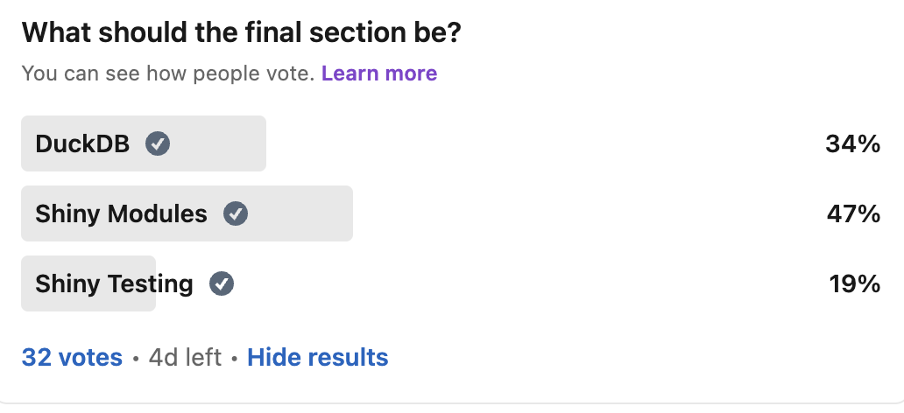
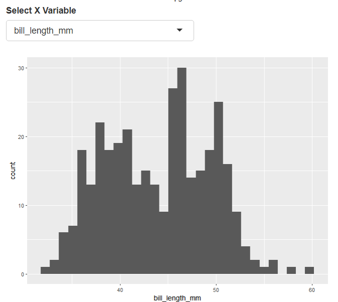

Part 3: Shiny Modules
Ted Laderas
Fred Hutch Cancer Center
You have LinkedIn to Blame
Modules
- Why?
- Motivating example
- How to code
Why?
- A new way to thinking about apps
- Modularize code into smaller apps
- makes it easier to develop with others
- makes it easier to test code
Use Shiny Modules if:
- You want to reuse your code, especially in the same app
- You are tired of thinking up unique ids for all the elements in your app (namespacing)
- You need to break up a monolithic shiny application into pieces
- multiple Shiny developers
Maybe not:
- Your app is a one and done - single version
- It doesn’t have that many controls that need to be reused
Motivating Example
- An ui that lets you pass in a dataset
- Lets you select columns from that dataset
- Want multiple plots in the same app
Using Shiny modules
Using Shiny modules
Exercise: Try it out
Reusing code
Reusing code
ui
Two modules, two datasets
- dataset is
mtcars
- dataset is
penguins

Making Your Own Modules
- ui module
- server module
- demo app
Make it easy on yourself
- Put your code in a package (
usethis::create_package()) - Use
<module_name>_serverand<module_name>_uifor your module names - Have a demo app
<module_name>_demo(makes it easier for testing)
ui module
- Initialize the namespace for
idusingNS()function - Need to refer to any controls/plots with ids wrapped in
ns()- such as
ns("x_var")orns("hist_plot")
- such as
Server Module
- define a function that takes an
idas input moduleServer()encapsulates your server code
Server Module
- Put your server code in
moduleServer() - be really careful with closing curly brackets and parentheses
Write a demo app function
- write an
<module_name>_demo()function - useful for documentation and testing
Exercise: Use a Shiny Module
- In RStudio, open up
"modules/module_demo_02/app.R" - Wire in a new dataset to one of the plots
- If you’re feeling adventurous, add a new plot
Module Design
Module Design
Careful design
- What does the module do?
- What is it trying to accomplish?
- What is the module’s name?
Inputs and Return Values
- Static or Reactive Inputs?
- Complexity of return values
- Which outputs serve as inputs for other modules?
Eric Nantz: Effective Use of Shiny modules in App development :::
Communicating between modules
- modules can return single objects or named lists
- Ames Housing App
# execute plot variable selection modules
plot1vars <- varselect_mod_server("plot1_vars") #returns a reactive
plot2vars <- varselect_mod_server("plot2_vars") #returns a reactive
# execute scatterplot module
res <- scatterplot_mod_server(
"plots",
dataset = ames,
plot1vars = plot1vars,
plot2vars = plot2vars)scatterplot_mod_server
scatterplot_mod_server <- function(input,
output,
session,
dataset,
plot1vars,
plot2vars) {
plot1_obj <- reactive({
p <- scatter_sales(dataset, xvar = plot1vars$xvar(), yvar = plot1vars$yvar())
return(p)
})
plot2_obj <- reactive({
p <- scatter_sales(dataset, xvar = plot2vars$xvar(), yvar = plot2vars$yvar())
return(p)
})
output$plot1 <- renderPlot({
plot1_obj()
})Go Further
- Shiny Modules for Beginners - Emily Riederer
- Eric Nantz: Effective Use of Shiny modules in App development
- Mastering Shiny: Modules
{rhino}- framework for developing apps from Appsilon